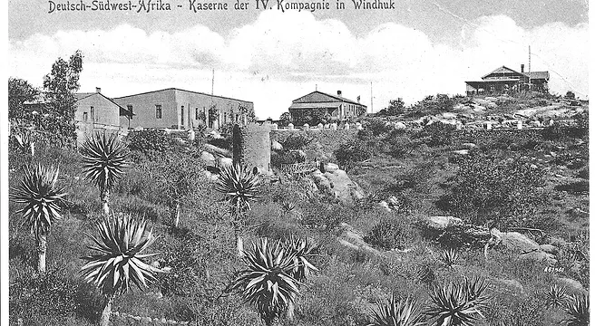
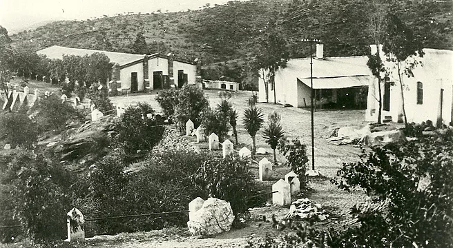
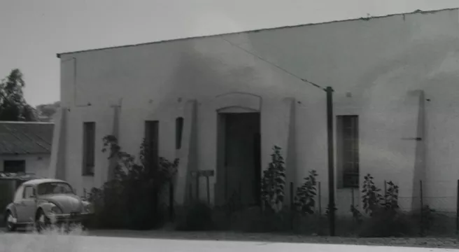
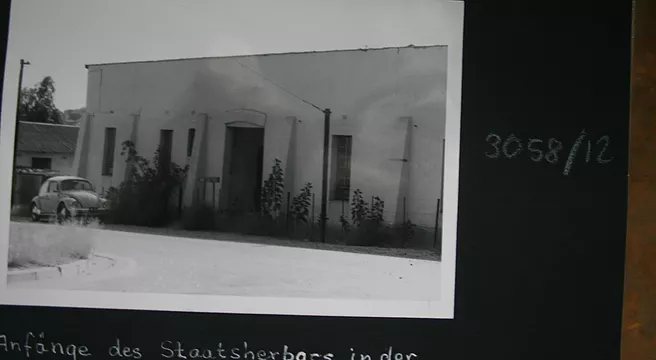
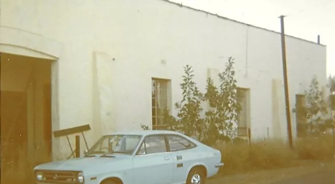
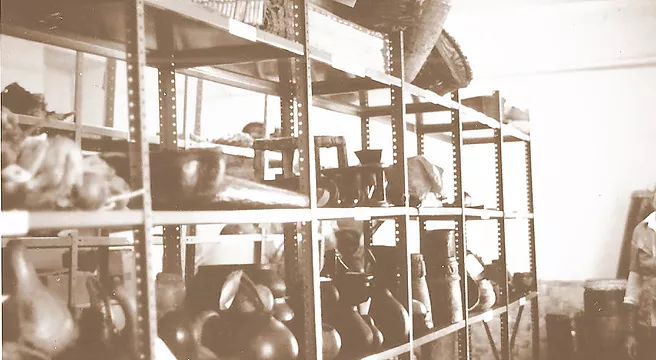

The so-called Camel Stables Building, which is situated off Huegel Street overlooking the western skyline of Windhoek,
is one of the city’s oldest buildings constructed during the late 1890s to serve as barracks for the Forth Division’s Artillery (“Kaserne der IV. Kompanie”)
of the German Schutztruppe. As such it served until World War I. From the mid-1920s to approximately 1956 it was utilized as boys’ hostel by Windhoek High School
and during the 1960s the National Herbarium with its precious collections of Namibian plant samples was housed in the building.
Since 1973 it is occupied by the National Museum of Namibia, who utilized it as collections repository and workshop.
With the exception of minor repairs and improvements, made in 1974 and 1987, the complex has never experienced a complete renovation. Despite the lack of regular maintenance work,
it is still in relatively good condition as a result of strict building regulations and excellent workmanship, which prevailed in the building sector during its building phase.
The importance of the Camel Stables Building is not only reflected in its multi-facetted usage over the past 120 years,
but it also represents one of a few remaining buildings, which date to the real pioneer-phase in the Namibian building history.
By far the largest portion of this historical heritage has been demolished over the last decades,
as the preservation of colonial buildings has never played a vital role during any of Namibia’s government epochs since WWI.

Kaserne IV. Kompagnie, ca 1910 Fotosammlung Walter Rusch

Kaserne der IV. Kompagnie Fotosammlung Herman v Wyk

Klippdachskaserne, Herbarium ca 1960

Klippdachskaserne, Herbarium ca 1960

Kaserne IV. Kompagnie, 1974 Foto A Otto.tif

Kaserne IV. Kompagnie, 1974 Foto Antje Otto